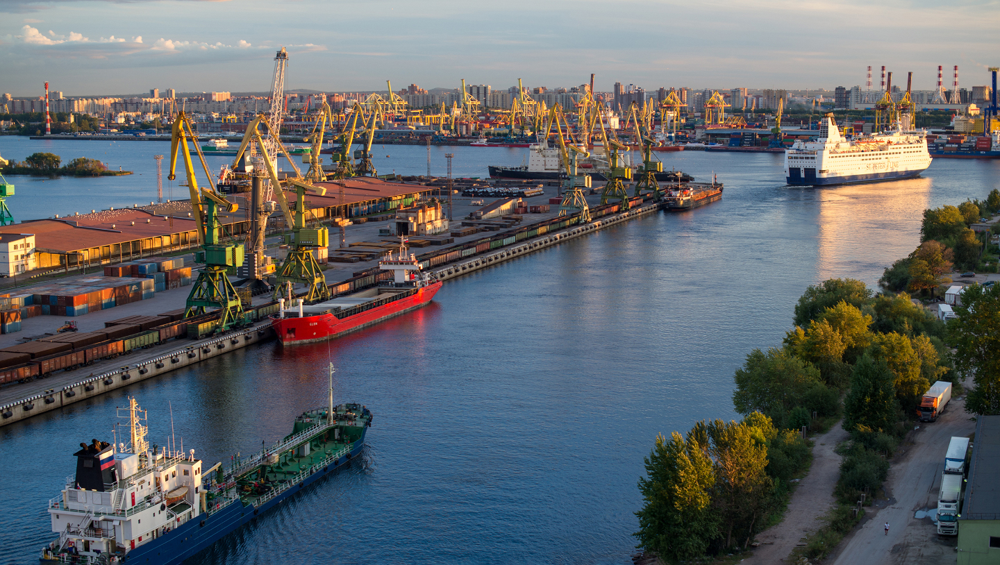
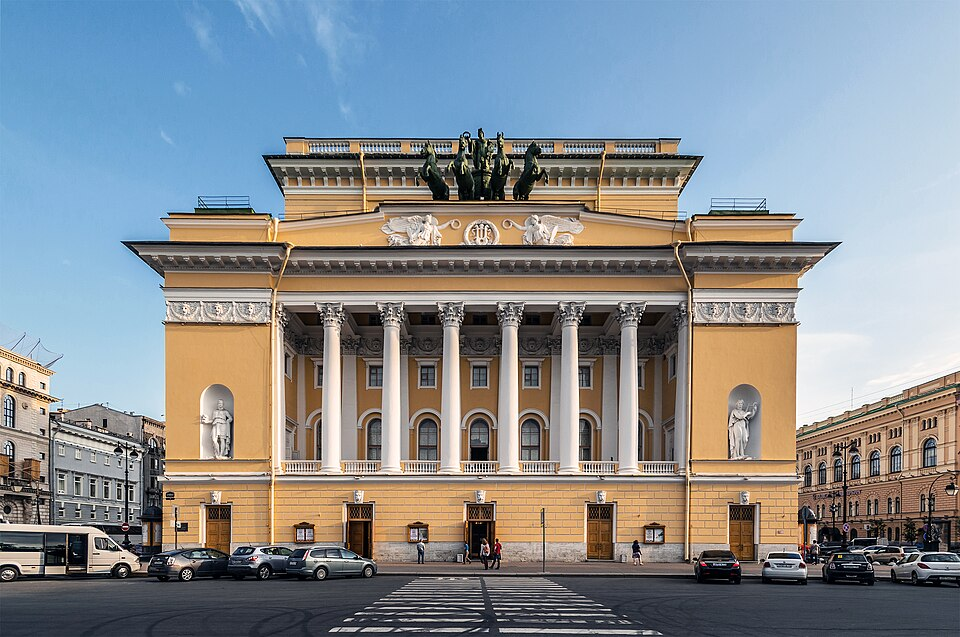
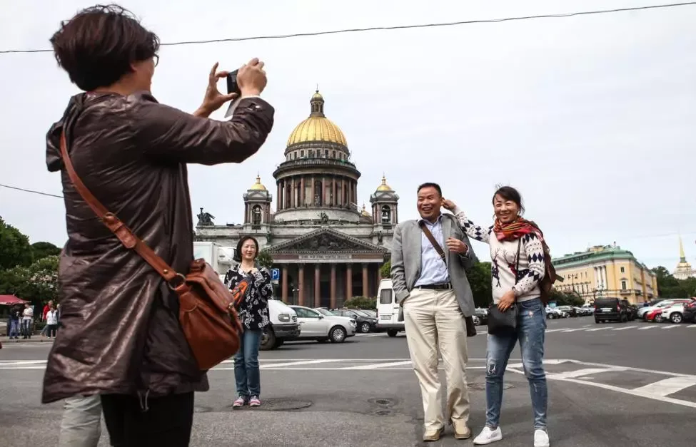

Экономика Санкт-Петербурга живет во основе своей за счет туризма, немалым фактором является географическое местоположение города, Финский залив с самого момента основания города, дал широкую торговую возможность

Культура Санкт-Петербурга складывалась много веков. Город пережил немало тяжелых времен, однако это совсем не помешало ему. Наоборот город как-будто бы "впитывал" себя все это, и переживал все вместе с жителями. Ниже я постараюсь затронуть часть культорного наследия нашего города

Туризм в Санкт-Петербурге развит как негде лучше. Город предлагает невероятный перечень того, что можно посмотреть. Помимо объектов культурного наследия, он предлагает широкий выбор для любителей водных, пеших, и даже мотопрогулок. В городе огромное количество торговых центров, рынков, и не забываем про красоту которая находится чуть дальше, в Ленобласти.